QQ增值相关业务
QQ增值相关业务
ROLE交互 & 视觉设计 TIME2019.06-present概述 Summary
QQ增值服务主要包括会员（含超级会员）、大会员及黄钻（含超级黄钻与情侣黄钻）三大会员体系，涉及到的功能模块主要为手Q中的会员专区，少数其它场景下的会员模块。
因个人希望发展为产品体验设计师，组内也给予支持，因此多数情况下，会同时支持单个需求的交互与视觉设计。（PS. 业务相关的视觉设计不涉及到强创意与表现力，偏向组件化状态设定）
体验了解 Get to know
初来乍到，自己此前并非会员用户，首先从非会员的角度对会员模块进行产品体验，并输出体验报告，在例会上做组内分享。
一 / 初期整理
在浏览会员模块的同时，整理模块架构并记录问题点：
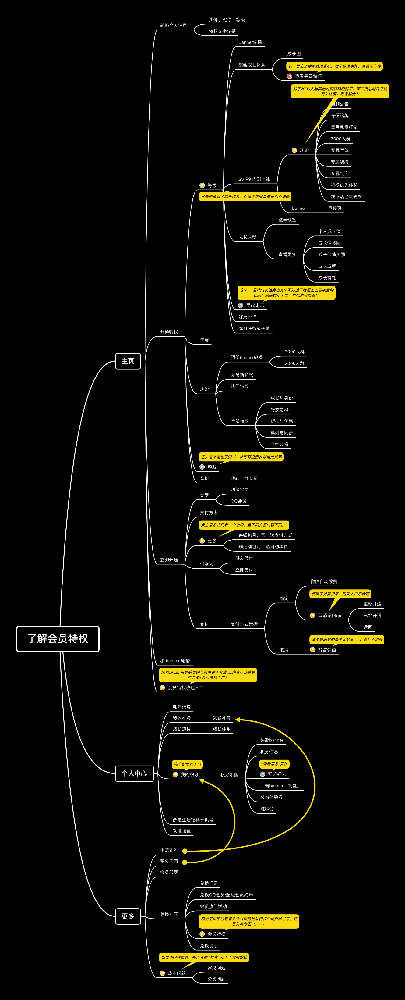二 / 体验报告
首先将之前记录的问题点进行整理，分类归纳为：
- 内容上 过多内容是非会员不在意的
- 导航上 上层分类与下层内容不一致
- 实现上 具体交互和细节问题
注意力和重点被混淆
错误心理预期；页面入口难记忆
考虑到会进行现场分享，且组内同事人均年费超级会员，我在进行整体概述后，用一个非会员视角的简单体验流程引入后再汇报具体问题点。
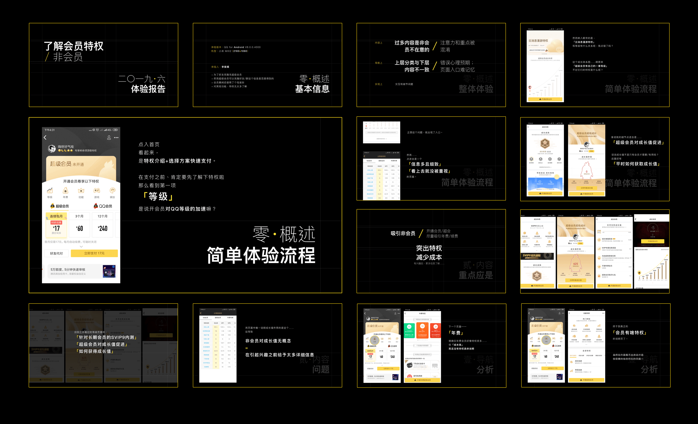QQ会员微信小程序签到红包 Interaction
一 / 需求背景
这个需求的前身是一个“QQ会员微信裂变活动”，但由于活动形式不够妥当，在组里高级设计师的支持下，和产品协商改为利用小程序现有的签到模块进行裂变红包分发。
二 / 需求沟通
在需求沟通中，首先确认几个要素：
- 目标：增加QQ会员微信小程序绑定QQ的用户量，提高微信的QQ会员用户活跃
- 3000万会员用户中，1300万是QQ会员微信粉丝，但只有518万绑定了QQ号
- 后续有计划中的会员微信专属特权与活动
- 方式：优化QQ会员微信小程序已有的签到模块，增加签到提醒，签到后可以分享红包
- 奖励内容：活跃天（forQQ用户）+成长值（only for会员）
- 奖励机制：绑定QQ+开通会员后才可通过签到/分享领取奖励
- 优化召回：签到提醒（内）+红包引回（外）建立召回机制
- 用户：是否绑定&是否为QQ会员
- 是会员+已绑定：开红包，不同状态
- 未绑定+是会员：前去绑定
- 未绑定+非会员：开通或去小程序了解会员
三 / 具体设计
业务场景可以划分为3个部分，其中红包页需要额外设计。
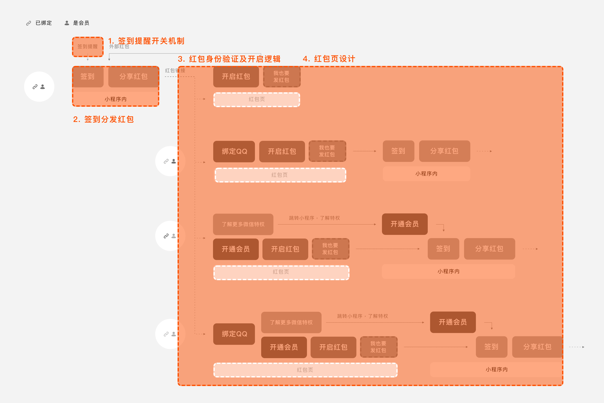- 签到提醒开关机制
- 若提醒是开启状态，不在弹窗中显示复选项
- 若提醒是关闭状态，弹窗中显示复选项（且不默认勾选）
- 签到分发红包的机制
- 红包身份验证及开启逻辑 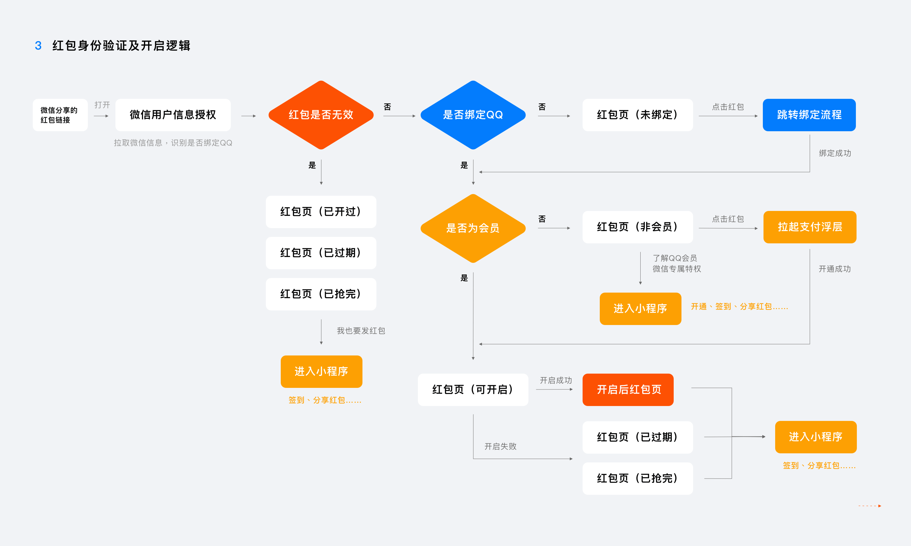
- 红包页设计 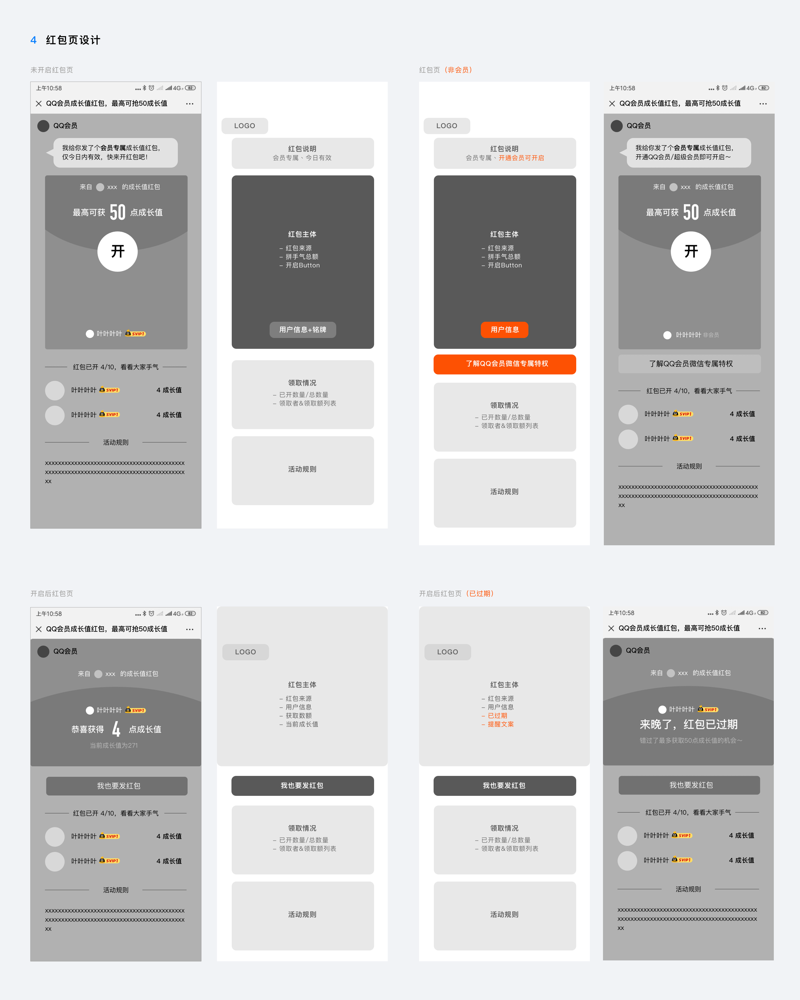
-
在原签到逻辑上增加：开启签到提醒复选框
只在第一次签到时默认勾选。后续签到时：

支付浮层 Interaction & Visual
一 / 概述
支付浮层作为增值服务的付费入口，随业务扩展与专区改版进行过多次迭代；我参与到其中的需求包括：
- 支付浮层整合专项
- 会员加速包支付浮层
- 支付方案主题化运营位规范
- PC端支付浮层改版
二 / 移动端支付浮层整合、优化、场景补全
整理了目前QQ增值体系下所有支付场景对应的支付浮层：
 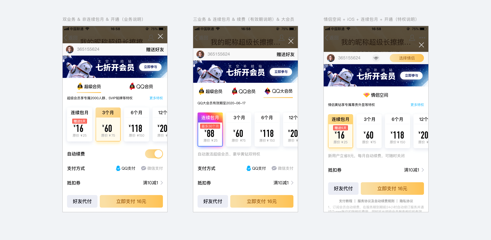
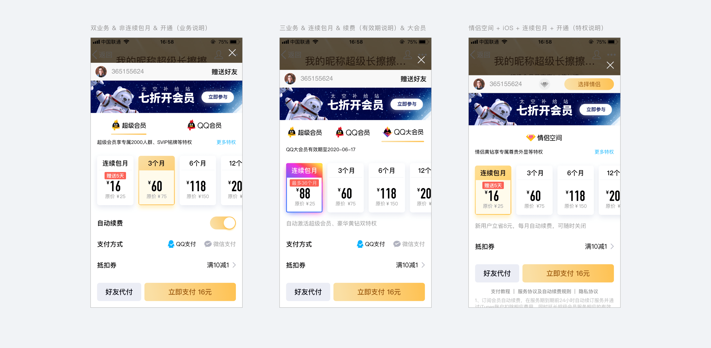
同时为不同业务设计带有业务品牌氛围的特权弹窗：
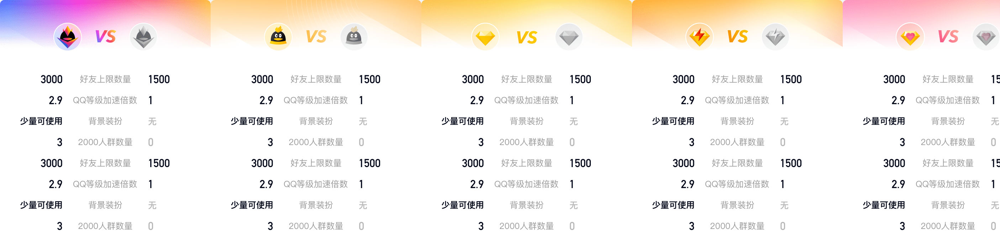三 / PC端支付浮层
对PC端支付浮层进行改版，支持运营及连续方案选择，同时更新视觉样式。
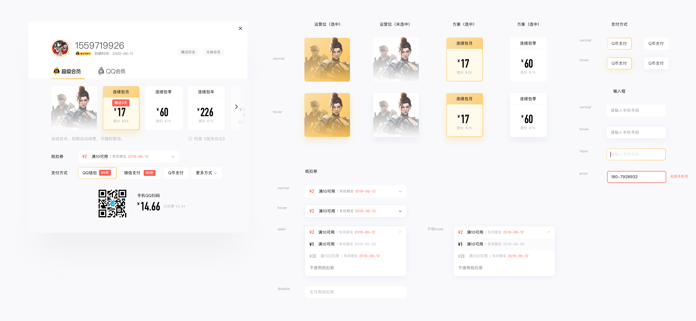会员邮件模版 Interaction & Visual
需要对现有开通、催费、升级、生日关怀及支付挽留类邮件样式做调整，提升邮件转化率。在需求沟通，了解现网问题后，首先思考邮件的目标及如何提高转化率：
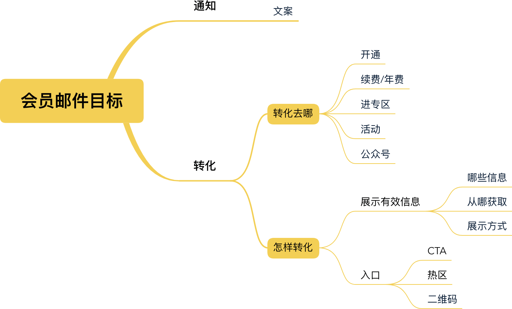了解会员在开通/催费/升级/支付挽留时的策略，与产品讨论决定邮件展示相关信息的方式：
- 展示哪些信息
- 展示方式
- 转化入口
提醒文案、身份展示、特权介绍、到期反馈、成长值、活动、公众号（微信+QQ）。以开通提醒的情境作为标准模版，其它情境下更改文案和增删模块。
考虑手机邮件用户比例大，且QQ邮箱会推送到手Q，以移动端为基础进行设计，再以600px为内容宽度适配到PC端。
邮件不可复用官网的代码，只能用图片+文字+热区的形式；浏览方式上也只能竖滑。因此在官网基础上减少跳转入口，调整内容的宽度；CTA也确保在首屏内展示。
之后结合会员官网对应模块，先设计开通情境下的标准模版，再根据其它情境调整版块及文案：
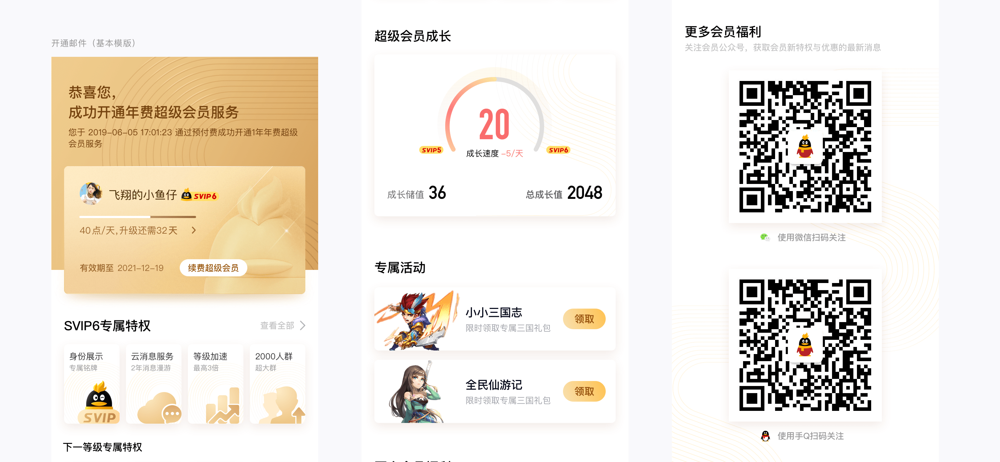 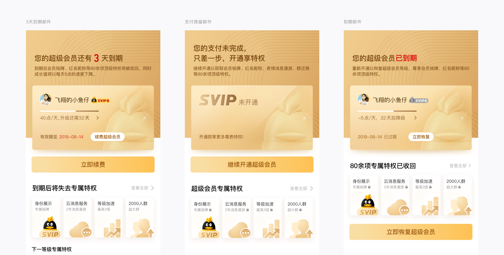成长与收获 Growth
一/ 视角的转换
在这之前的校园经历和实习都没涉及具体业务，可能都偏向于“功能体验”；但随着排到的需求深入业务，我需要转换到「增值」视角进行设计。例如在设计会员邮件模版时，了解会员体系下对不同阶段用户采取的策略，以及不同情境下给予的反馈情况后，尝试从数量拉动、特权感知、提升活跃、吸引留存、召回、开通优化等角度进行设计。
二/ 提高效率
排期需求很多是在一定基础和前提下的迭代优化，最开始我只是低效地去自己搜集信息，然后在设计过程中再去查阅相关内容——这种方式是零碎且狭隘的，我始终是以“中途加入”的视角进行相关了解，且了解到的内容也很难沉淀。
于是在工作过程中，我开始从两个方面来提高效率
- 扩大沟通目标
- 按进程做信息收集文档
接到需求，不仅是首先去找产品沟通——先问问组里做过需求相关设计的同事和老师，从他们的视角去了解需求基础和前提；和产品沟通之后，也需要明确需求中哪些涉及到平台性的设计，需要和负责相关内容的老师确定方案。交互和视觉都是一样的，沟通完备后才开始具体的设计。
对于当下进行的单个进程（eg.某个需求），把收集到的相关信息集中到一个文档里。比起之前只归档某个特定主题的内容，这样的方式更方便当下（省去重复的搜索），在回顾时思路也更清晰。每隔一段时间再做统合整理方便知识积累。
对我感兴趣？查看我的